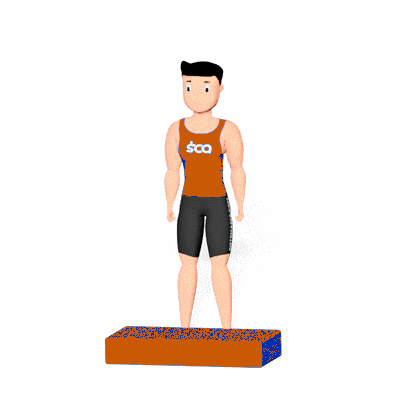

Salto no Step

Exercício pliométrico que fortalece quadríceps, glúteos e panturrilhas, além de desenvolver potência, resistência e coordenação. Indicado para praticantes de todos os níveis.
Ficha Técnica
Tipo: Aeróbico
Grupo Muscular: Perna
Aparelho: Nenhum
Músculos: Nenhum
Como realizar
- Fique em pé em frente ao step com pés afastados na largura dos ombros;
- Flexione levemente os joelhos e impulsione o corpo para cima;
- Salte sobre o step, aterrissando com ambos os pés ao mesmo tempo;
- Flexione os joelhos para absorver o impacto, mantendo tronco ereto e abdome contraído;
- Retorne ao solo com cuidado e repita o movimento.
 RC STORE
RC STORE